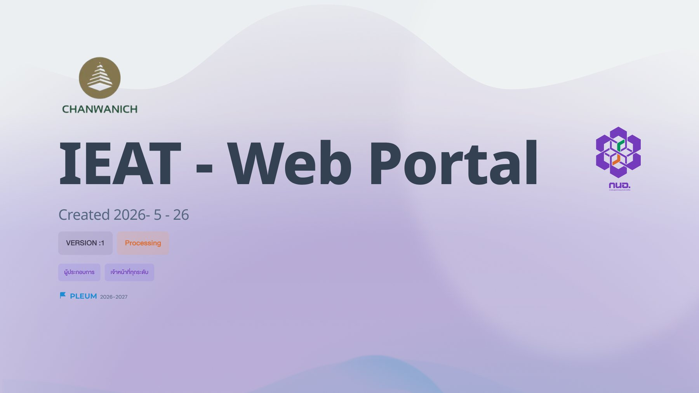
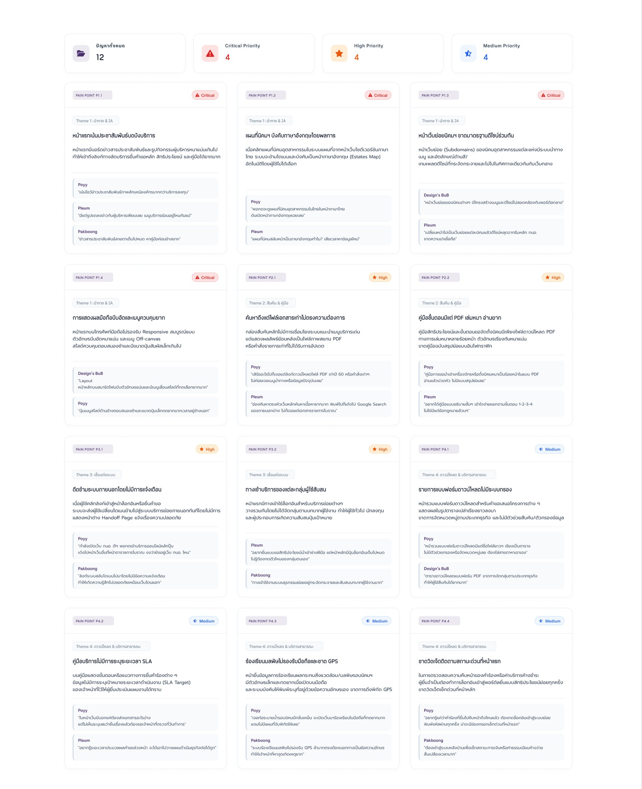
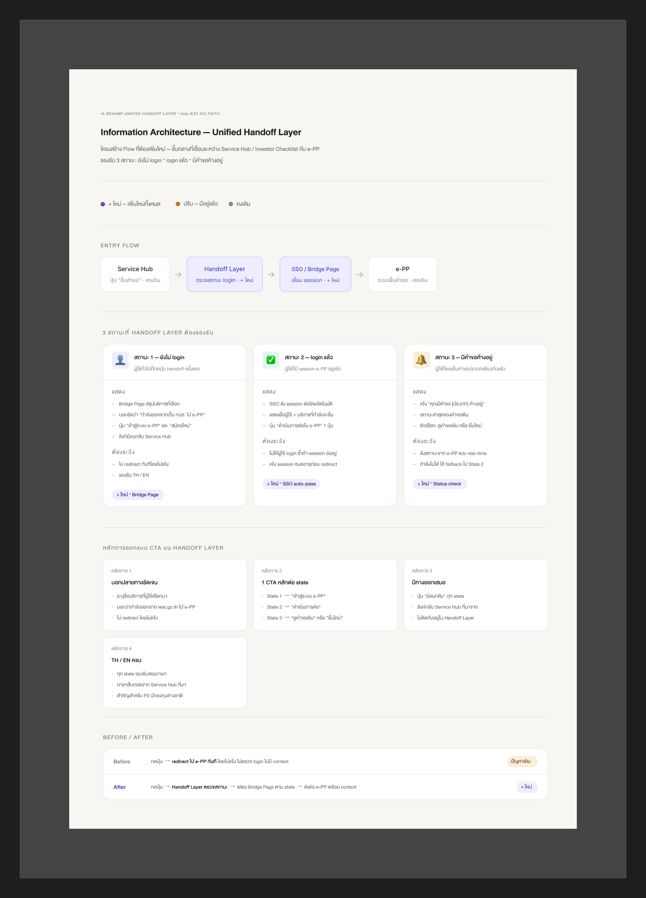
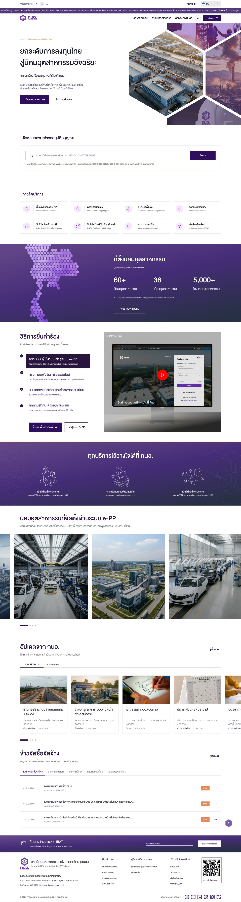
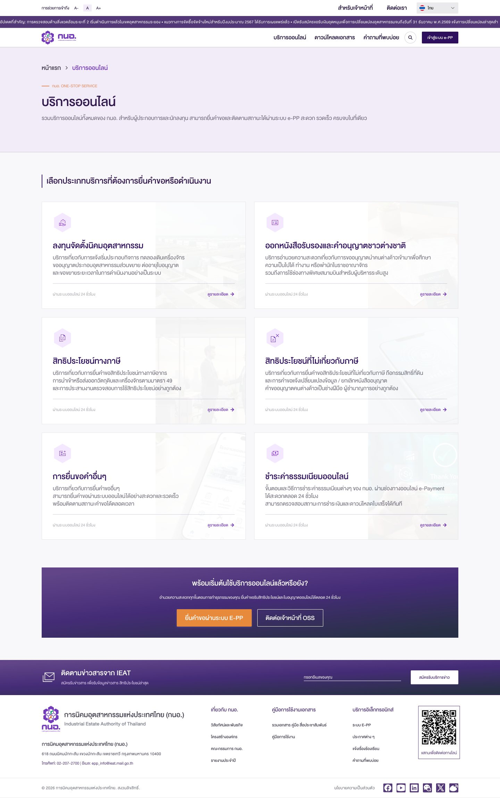

340+
links
Sorted by department, not by task.
~45s
to find e-PP login
4–6 clicks. Staff bookmarked the URL instead.
PDF
service pages
No steps, fees or timelines on the page.
Insight
From 340 links sorted by department to a portal built around tasks.

An unexplained redirect to another domain, right where users needed trust.


Five common tasks under the hero.
Read it, then do it. In HTML, not PDF.
A bridge to e-PP with three states.



Tokens and 25+ components shared by both teams.

Task Launcher, e-PP in the navbar, status by request number.

